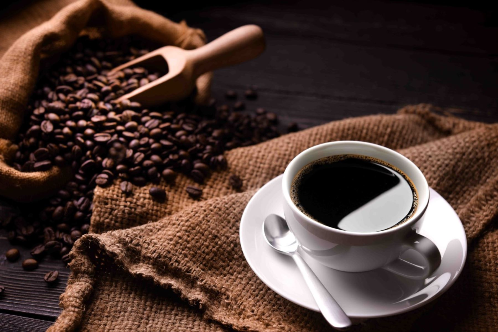

El café es una bebida de carácter universal que se consume en todos los países del mundo. Sin embargo, el café como grano, es una semilla que procede del árbol o arbusto del cafeto, una rubiácea que crece en climas cálidos y cuyo cultivo se extiende a tiempos relativamente próximos.